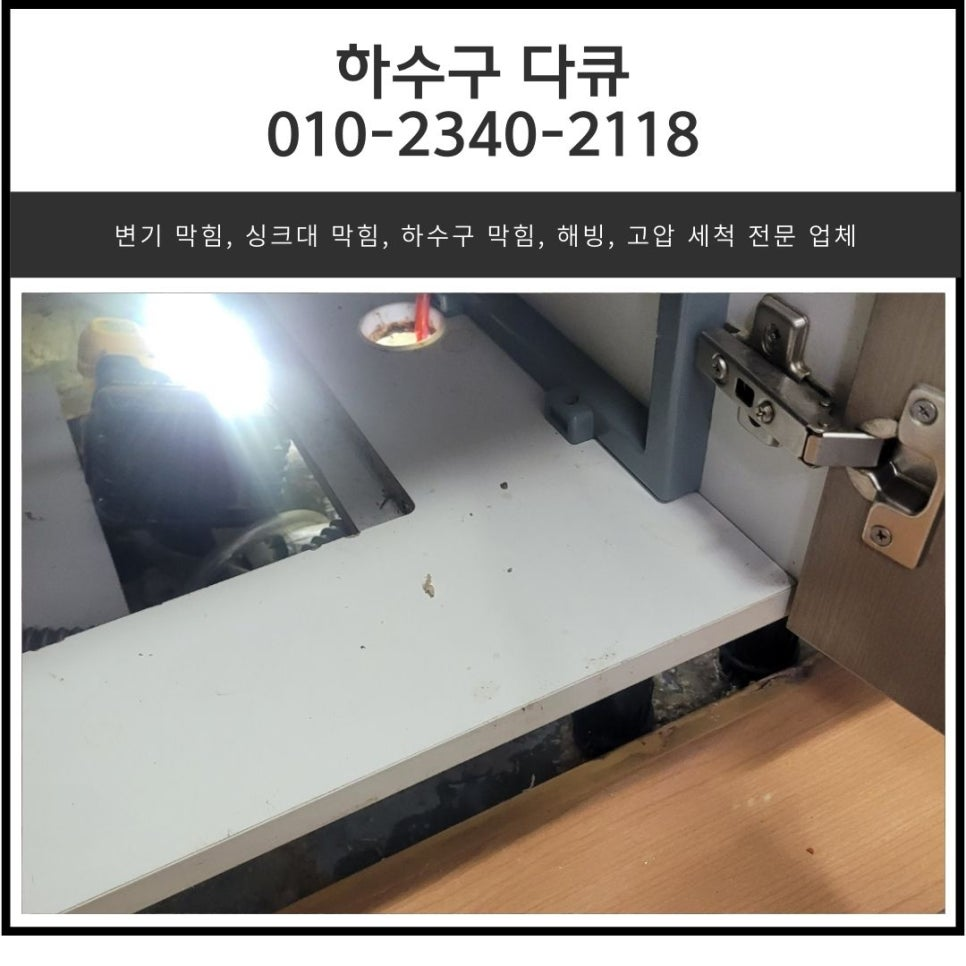
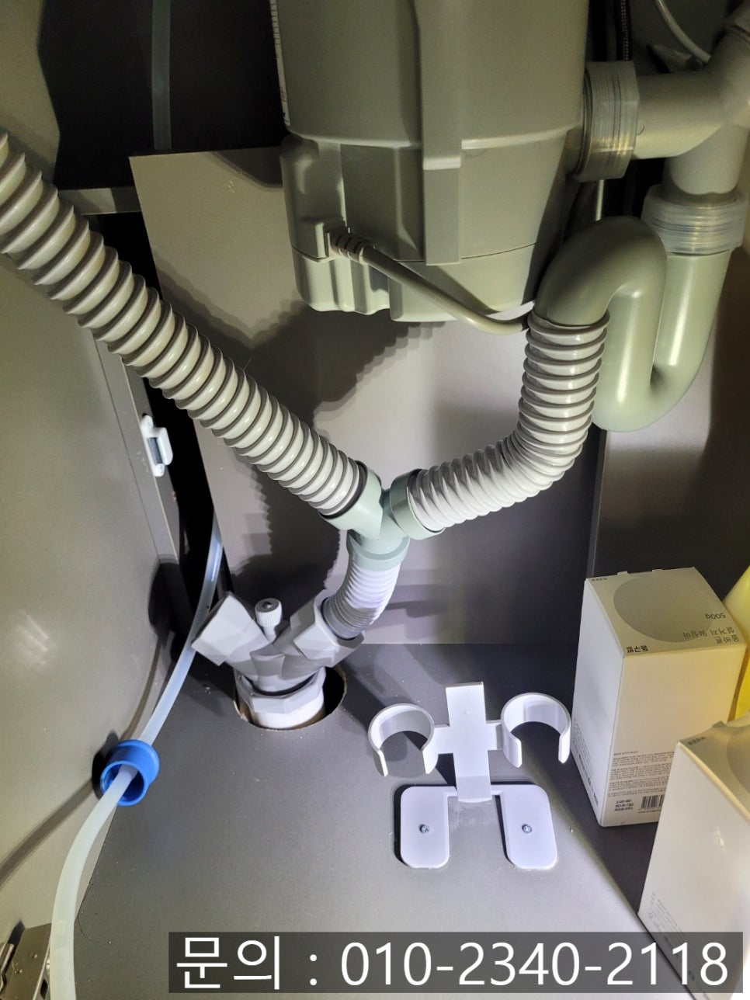
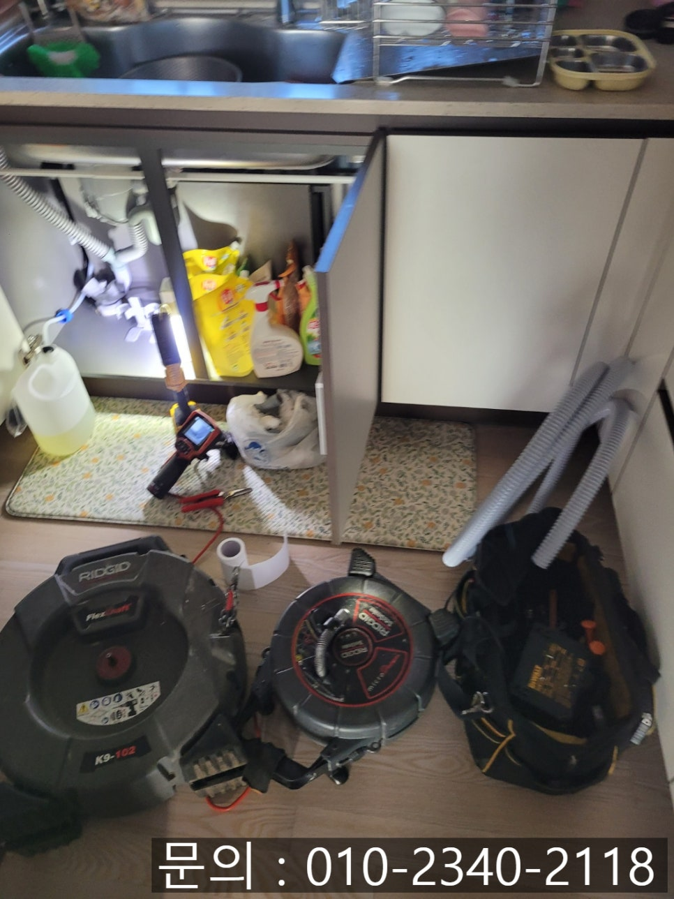
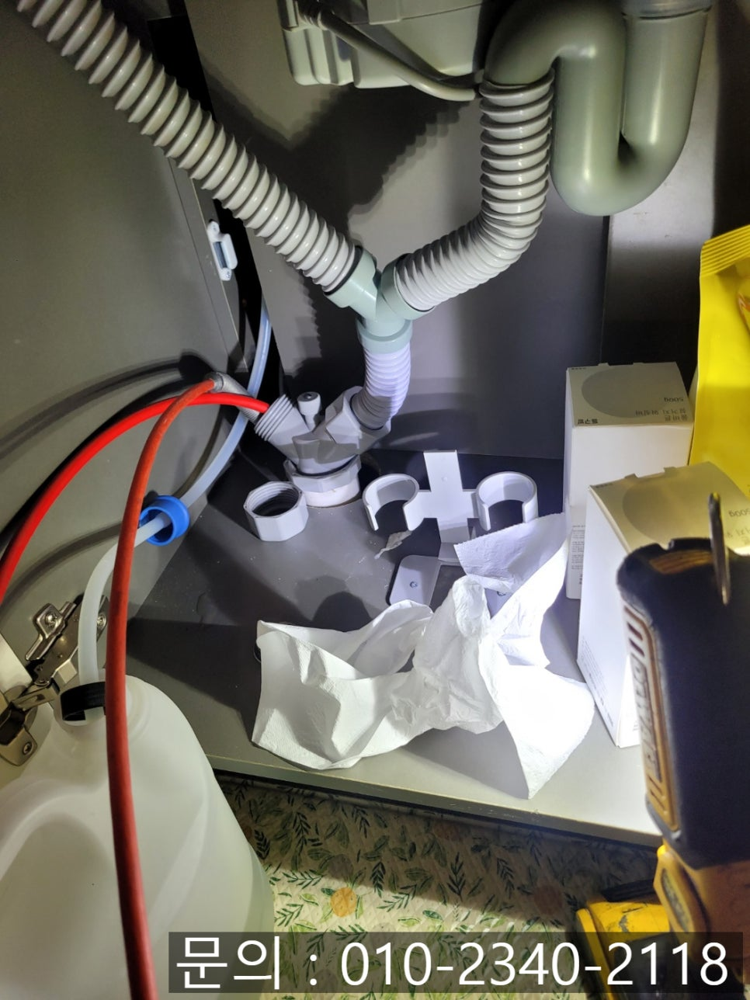
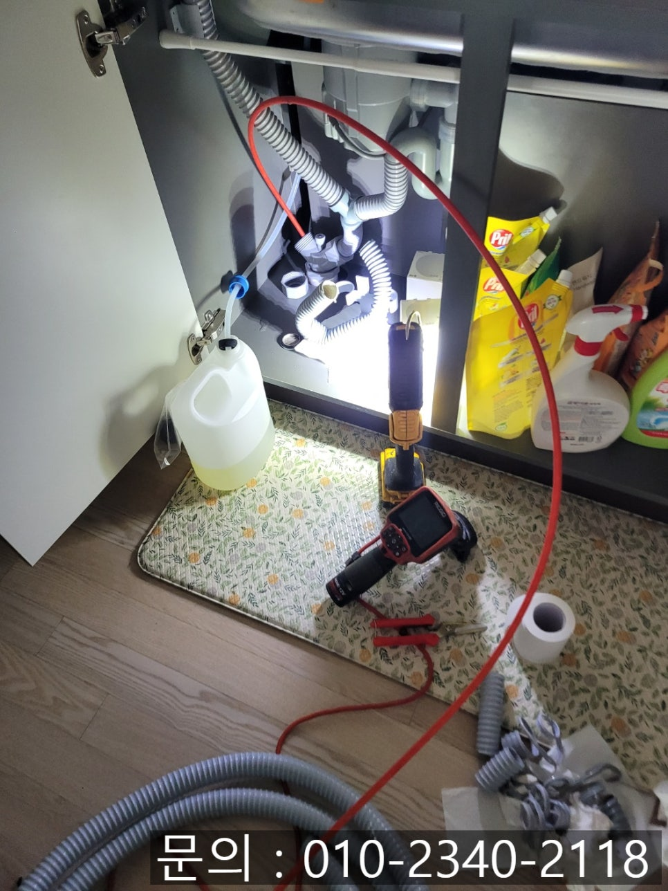
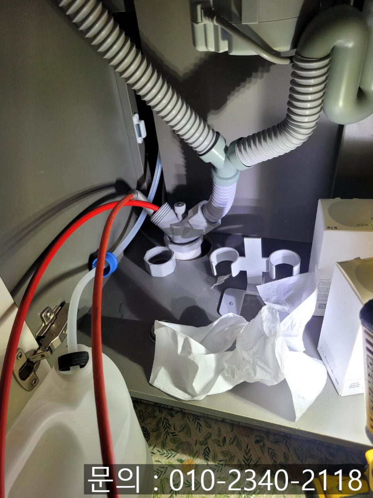
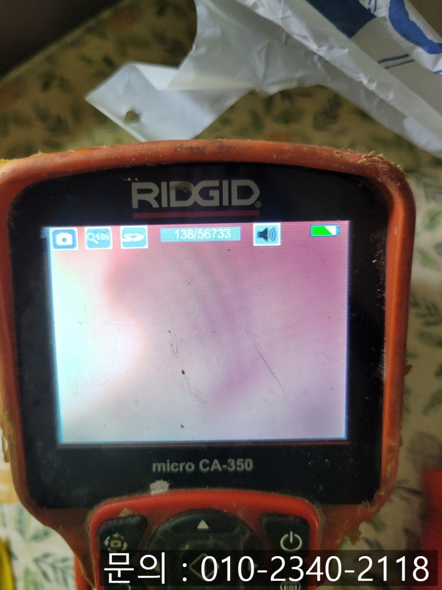

🏠 향남 싱크대 막힘 화성 향남읍 아파트 하수구 역류 전문 설비업체
화성 향남 싱크대막힘 전문 시공 후기

📋 작업 개요
- 위치: 화성 향남, 향남, 화성
- 서비스 유형: 싱크대막힘, 하수구막힘, 배관막힘, 누수수리, 역류해결, 배관청소
- 작업 일시: 2025. 2. 19. 22:39
- 업체명: 하수구수사대 (010-5615-2118)
🔍 문제 상황
안녕하세요.
향남 싱크대 막힘, 화성 향남읍 아파트 하수구 역류 전문 설비업체 하수구 다큐입니다.
가족들이 맛있는 식사를 하기 위해 준비하고, 먹고, 치우는 공간인 주방에서 물이 원활하게 배수되지 않는다면? 여러 가지로 불편한 점이 생기게 됩니다.
싱크대에서 사용한 물이 통수가 되지 않는 단순 막힘도 불편한데, 배관에서 거꾸로 역류하는 현상이 나타나면 더 큰 문제가 발생할 수 있어요.
특히 많은 세대가 거주하고 있는 아파트의 경우 향남 싱크대 막힘, 역류로 인해 아래층 주방 천장으로 누수가 이어질 수 있어 싱크대에 문제가 생기면 바로 화성 향남읍 아파트 하수구 역류 전문 설비업체의 도움을 받으셔야 합니다.
오늘 포스팅할 현장은 최근 향남 싱크대 막힘으로 하수구 다큐에게 방문을 요청해 주셨어요.

🔎 원인 분석
💡 전문가 진단: 정밀 진단 장비를 사용하여 슬러지의 고착 여부를 판명하고 타격/세척 작업을 실시했습니다.
얼마 전부터 싱크대에서 사용한 물이 천천히 내려가서 신경 쓰였는데, 한꺼번에 많은 양의 물을 사용하게 되면 아래에서 거꾸로 역류한다고 다급하게 연락을 주셨습니다.
신속하게 필요한 장비를 챙겨 현장에 방문해 드렸고, 싱크대 하부장을 열어 점검을 시작했습니다.
싱크대를 점검해 보니 S자 모양으로 휘어진 배관을 확인할 수 있었어요.
S 트랩은 휘어져 있다 보니 물을 많이 사용할 때 배관을 타고 흘러가지만 물을 사용하지 않을 때는 배관에 물이 고여있어 하수구에서 올라오는 악취나 벌레가 올라오는 것을 막아주는 역할을 합니다.
이번 현장 역시 악취도 심했던 상태로 화성 향남읍 아파트 하수구 역류 전문 설비 업체 하수구 다큐는 내시경 카메라를 배관 내부로 진입시켜 정확한 막힘의 원인을 파악해 보기로 했어요.
사람의 위나 대장도 문제가 있는지 눈으로 직접 확인해 볼 수 없는 것처럼 하수구 배관도 내부를 눈으로 볼 수 없기 때문에 꼭 내시경 카메라를 이용해 정확한 원인을 찾아야 합니다.

🔧 작업 과정
배관 전용 내시경 카메라를 내부로 진입시켜보니 예상했던 대로 기름 슬러지가 가득 차 틈이 보이지 않을 정도로 꽉 막혀있었어요.
화성 향남읍 아파트 하수구 역류 전문 설비 업체 하수구 다큐는 고객님께 기름 슬러지가 생기는 이유와 해결하는 방법에 대해 자세히 설명해 드린 후 스케일링 작업을 진행하기로 했습니다.
스케일링을 하기 위해 사용하게 될 장비는 플렉스 샤프트입니다.
플렉스 샤프트 장비는 노즐 끝에 달린 체인이 배관 내부로 진입해 강하고 빠른 힘으로 회전하면서 내부에 붙어있는 기름 슬러지를 타격해 떨어트리거나 잘게 부서 주는 역할을 해주는 장비로 싱크대 배관 스케일링에 최적화된 장비입니다.
한참을 작업하고 있는데 고객님께서 악취에 대해 물어보셨어요.
배관을 청소하면 악취가 덜해지는 게 사실이지만 냄새에 민감하신 편이라면 주름 호스도 같이 교체하시는 게 도움이 되실 거라고 말씀드렸더니 주름 호스도 함께 교체해달라고 요청하셨습니다.
싱크대에서 버려진 물은 가장 먼저 주름 호스를 타고 흘러가다 보니 주름 사이사이에 물과 음식물 찌꺼기 등이 끼어 썩다 보니 악취가 발생할 수밖에 없는 구조로 주기적으로 교체해 주시는 것도 좋은 방법이에요.
한참을 반복해 플렉스 샤프트 장비로 이물질을 제거하고 주름 호스까지 모두 교체해 드렸고요.
청소를 진행한 배관 내부를 다시 살펴보니 잔여 이물질 하나 없이 깨끗해진 것을 확인할 수 있었습니다.
마지막으로 많은 양의 물을 사용해도 막힘이나 역류가 발생하지 않는 것까지 확인한 다음 장비를 챙겨 다음 현장으로 이동할 수 있었어요.


✅ 작업 완료
주방을 오랜 시간 사용하다 보면 싱크대 막힘은 자연스레 발생할 수밖에 없습니다.
지금 하수구 막힘으로 고민하고 계신다면 하수구 다큐와 함께 해결해 보세요!
경기도 화성시 향남읍 상신하길로328번길 26 5층 505호 5호




⚠️ 베란다 누수 및 방수 관리 방법
- ✅ 비가 많이 올 때 창틀 주변이나 아래층 천장에 얼룩이 생기는지 정기적으로 확인해 보세요.
- ✅ 우수관 주변 실리콘 마감이 들뜨거나 깨진 틈새가 있는지 손상 여부를 수시로 체크하세요.
- ✅ 베란다 바닥 타일의 줄눈(메지)이 소실되면 그 틈으로 물이 침투하여 누수가 유발됩니다.
- ✅ 누수 의심 증상 발견 시 방치하면 아래층 손실이 커지므로 즉시 전문가의 진단을 받으십시오.
💡 핵심 정리
- 확실한 장비 작업(내시경 점검 및 샤프트 스케일링)으로 원인을 뿌리 뽑습니다.
- 작업 후 1년 이내에 동일한 부위 재발 시 100% 무상 A/S 서비스를 보장합니다.
- 서울 · 경기 · 인천 전 지역에 24시간 언제든 긴급 출동할 수 있도록 항시 대기 중입니다.
❓ 자주 묻는 질문 (FAQ)
🚨 화성 향남 싱크대막힘 문제로 고민이신가요?
정확한 원인 진단과 확실한 시공으로 재발 없는 해결을 약속드립니다.
24시간 긴급 출동 | 서울 · 경기 · 인천 전지역 | 1년 내 재발 시 무상 A/S